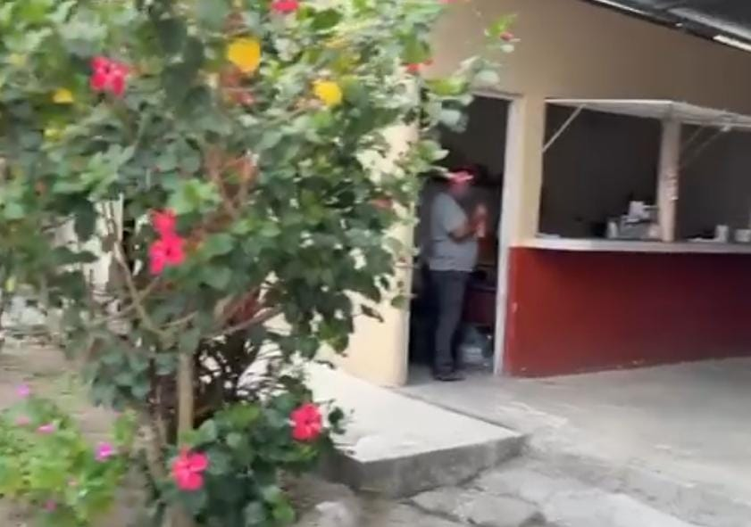
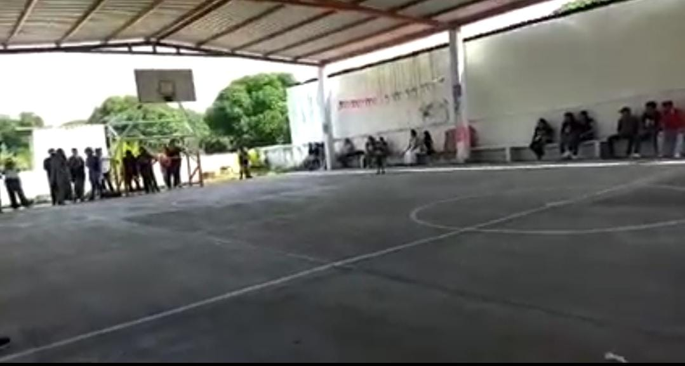

Aulas:

Salones
Los salones son asi,son de espacio estable y comodo,cuentan con climatizacion,pizarrones,escritorio,bancas para los alumnos,etc.

La cancha esta grande es muy espaciosa y con areas verdes,cuenta con porterias y cestas para que jueguen Baskeboll.

Cancha
La coperativa es pequeña pero brindan una variadad de alimentos y suelen cambiarlos conforme la semana.